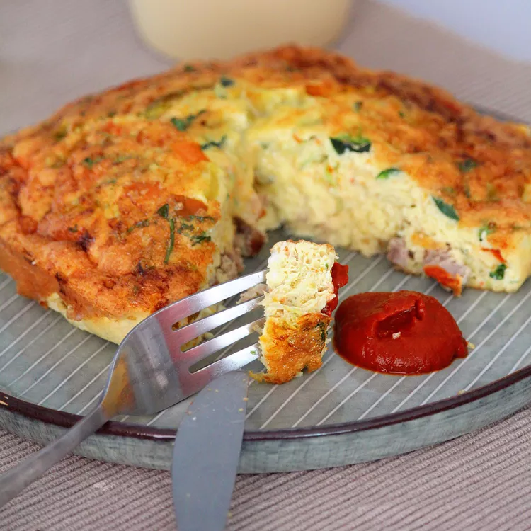

Air Fryer Frittata

Description
This air fryer breakfast frittata is easy to make using a cake pan that fits in the air fryer basket. Switch up the ingredients to suit your taste. If you are worried about the frittata sticking to the cake pan, line the bottom of the pan with parchment paper.
Ingredients
- cooking spray
- ¼ pound breakfast sausage, fully cooked and crumbled
- 4 large eggs, lightly beaten
- ½ cup shredded Cheddar-Monterey Jack cheese blend
- 2 tablespoons red bell pepper, diced
- 1 green onion, chopped
- 1 pinch cayenne pepper (Optional)
Steps
- Preheat an air fryer to 360 degrees F (180 degrees C). Spray a nonstick 6x2-inch cake pan with cooking spray.
- Combine sausage, eggs, cheese, bell pepper, green onion, and cayenne pepper in a large bowl; mix well to combine.
- Pour egg mixture into the prepared cake pan.
- Cook in the preheated air fryer until frittata is set, 18 to 20 minutes.